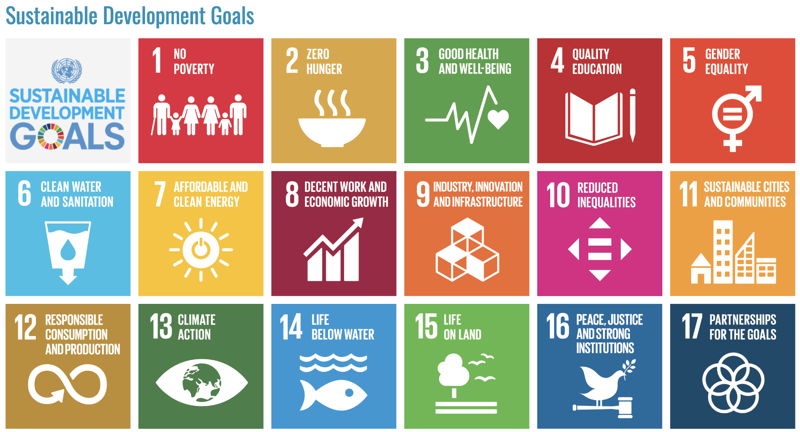
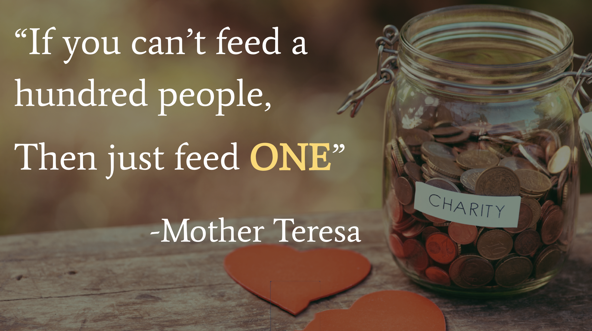
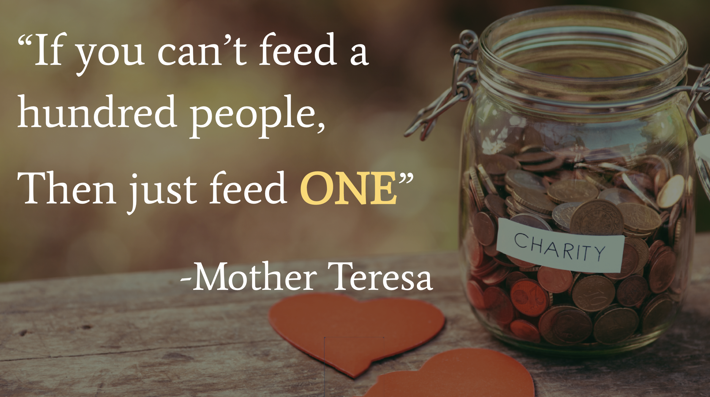

United Nations has 17 sustainable development goals to transform the world in the next 15 years. These goals aim at ending poverty, protecting the planet, and ensuring prosperity for all. The Be the Change initiative by UN provides an opportunity for all of us to better “walk the talk” when it comes to the development goals. Considering technology can reach individuals in every corner of the world, me and my team decided to create awareness regarding this issue with a unique approach.
Project Duration: 1 week
The world has just made its biggest ever promise to itself. Our leaders have agreed 17 Global Goals that would mean a better life for all of us. They would virtually end extreme poverty, fight inequality and injustice, and tackle climate change in the next 15 years. It’s one of the most incredible to-do lists ever written – we were given the task to turn words into action.

We were given the list of all these problems and were asked to come up with a solution to tackle one or more of these. At the initial stage as we went through the entire list, we realized how each of these issues is really BIG. One of our first thoughts was to involve all of these in one platform. But as we thought about is further we comprehended the impact every single one of these issues would have. We collectively agreed that focusing on one issue would garner greater value as opposed to involving all the issues in a single interface.
My team was comprised of five members.

My role was to conduct research by interviewing potential users with some generic questions, participate in the ideation process through paper prototype iterations, and mock-up medium fidelity design solutions that correspond to the low fidelity paper prototype. I also conducted user testing once the prototype was ready and recorded all the feedback from the process.
The very first thing we did as a team was to layout the different stages of our process. We had a week to tackle the project and we had to divide and conquer as efficiently as we could. An overview of the steps involved would be-
Keeping in mind the time constraint, we decided to branch out and go around the University Campus to talk to the students. This made the target users of our concept fall under the age group of 18-28 years. After a lengthy discussion pertaining to all the goals and taking into consideration the audience as university students, we decided to focus on Hunger Eradication as our primary goal.
We then split and set out to ask the students what their opinion was regarding the issue of hunger in the world at large. Some of the comments that we got were quite unexpected.
“Is that even a problem in our country!?”
“I want to help but I don't know how to.”
“I would like to have easy access to an interface that helps me contribute.”
Once the interview process was done, we re-grouped and exchanged notes. We had interviewed about 18 people and the information we collected reaffirmed our decision to go with this specific goal. We checked the list of goals once again and shortlisted the two we felt aligned perfectly with our research.


We decided to break down all the data we collected from the contextual inquiry process into User Personas. The idea here was to create reliable and realistic representations of our key audience segments for reference. Personas add a layer of real world considerations during the ideation conversations and we wanted to base our design decisions on these specifics.
Creating personas helped us step out of our assumptions and recognize that different people have different needs and expectations. The more we engaged with the personas, the more inclined we were towards considering them during the design process and wanting to create the best product for them. Having them handy and available to look at really helped enhance our designs for specific, rather than generic user base.
Some of the personas we created
User Testing: Contextual Inquiry
Wireframing Tool: Adobe Photoshop
Prototyping Tool: Marvel

By this point we had enough research points to get the final idea going. The thing about working in a team of 5 people is that a lot of ideas are circulating around. And even though all these ideas sound amazing, you have to focus on one specific design path.
In order to ensure we were all on the same page, we decided to implement the 8-Up Grid method. This was a quick and easy paper prototyping solution that helped us all get our ideas out in the open. For the first round, each of us took 10 minutes to note down the design process we had in mind. Once that was done, we put all our sketches on the wall and took turns to explain our own design processes. We shared and discussed the best ideas and conducted two more such rounds - which took all of half an hour. By the end of this, we had a pretty clear idea of what the final concept was going to be.

8-Up Grid method for paper prototyping
We decided to portray the final concept in a clean, visually appealing manner to have a clear idea of it.
The Concept: The idea was to make it easier for people to get involved and contribute to the goal. We decided that since our target users were going to be college students, designing an app would be the easiest way to get to them. Every college has a cafeteria, a place where student spend majority of their time. Our idea was to have donation boxes in these cafeterias where students could easily put in their waste food.
The donation box would be in turn connected to a big screen which would in turn display the amount of food each person is donating, and the lives they’re saving. This would in turn motivate them to contribute. The cafeterias could have collaborations with the nearby soup kitchens. This physical interface could radically change the lives of millions of people who face hunger poverty.
The screen would have information of an application, along with the bar code to make it easier for the students, where they can go to make their contribution. And this is where our product comes into picture.

Our idea was to design an app which would provide an accessible platform to the people who want to donate food. The app would let you donate food OR money, and based on the selection you make the service would be provided.
A lot of the user feedback we got was how it was a hassle to go to specific locations to donate the food and so a feature we included in the app was food pickup service. This service was available when a user opted for donating food. Along with this, there would also be a list of soup kitchens near you made available to you.
We even has a social share screen which provided the app a little fun angle. The users could share their contributions on social media through this screen and also let their friends know how many lives they’re saving. In addition to this, we introduced some cool titles each user could get based on their contributions.
Medium Fidelity Wireframes - The next step was to convert the paper prototypes to medium fidelity wireframes and link the screens to create a fully functional prototype. This process took up some time as the wireframes we had on paper were very required to be polished a little to get an idea of how the final product would look.
The resulting wireframes were designed to give the users the look and feel of a personal cause that they could relate to. This process involved a lot of iterations before the final product was ready.

The transition from the paper prototypes to the medium fidelity wireframes
As soon as the wireframes were ready, it was time to start prototyping. We decided that in order to ensure smooth flow of the prototype, we would design a screen to handle all the blind spots that we could not design for. The purpose of creating a prototype was to have a working flow for the users to go through. This would not only help the users interact with the app, but also make it easier for us to recognize the pain points and issues with the our designs. The final prototype was made in Marvel and looked like this.
One of the biggest constraints we had was the time limitation. The idea we had in mind involved a lot of different user flows that we could not design for due to the time duration of one week. If we had more time, I would have liked to design a complete flow for atleast one use case instead of option for a general flow. I had no doubt that this could bring up potential issues that we had not yet considered, and coming up with design solutions for those cases would have been challenging.
Another point we had to consider was the fact that even though the app we were desinging would prove to be accessible to the users, the marketing idea we had with the screen would involve a big budget for the universities and would prove to a hindrance in the initial stage. I would have liked to come up with alternatives that could act as an initial benchmark and gradually develop to adapt the concept in its entirety. This could possibly make our solution more reasonable for universal adaptation.
User Testing - Once the prototype was ready, we tested the product with 6 users. Some of the key takeaways from the testing process were-
“The look is sleek but some screens are difficult to read with that background.”
“How would I communicate with the person who is coming to pick up my food?”
“I really like the social share concept. I can tell everyone about my contribution to the cause!”
All in all, majority of the comments we got from the users were addressing the blind spots that we had not designed for. There was a lot of positive feedback about the cause that the app was designed to serve and the way it made them feel.
We, as a team, learnt a lot about this cause through this project. Through this proposed concept, we attempted to make a little difference. The motive is quite simple. This concept made us passionate about a cause and through our proposals, we wanted to contribute to the cause.
 
